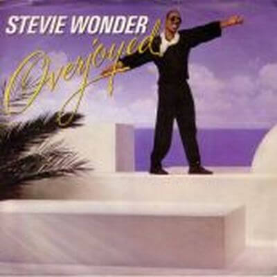

Video

Letra
Over time, I've been building my castle of love
Just for two, though you never knew
You were my reason.
I've gone much too far
For you now to say
That I've got to throw my castle away.
Con el tiempo, he construído mi castillo de amor
Sólo para dos, aunque tú nunca supiste
Que eras mi motivo.
He llegado bastante lejos
Como para que ahora digas
Que tengo que tirar mi castillo.
Over dreams,
I have picked out a perfect come true
Though you never knew it was of you
I've been dreaming.
The sandman has come from too far away
For you to say: Come back some other day.
Entre los sueños,
Elegí uno perfecto para hacerse realidad
Aunque tú nunca supiste que era contigo
Que estaba soñando.
El hombre de la arena ha venido de muy lejos
Para que tú digas: Vuelve algún otro día.
And though you don't believe that they do,
They do come true.
For did my dreams
Come true when I looked at you.
And maybe too, if you would believe,
You too might be
Overjoyed, over loved, over me.
Y aunque tú no lo creas,
Se hacen realidad.
Porque en verdad mis sueños
Se hicieron realidad cuando te miré a ti.
Y quizás también, si creyeras,
Tú también estarías
Encantada, demasiado amada, por mí.
Over hearts,
I have painfully turned every stone
Just to find I had found
What I've searched to discover.
I've come much too far
For me now to find
The love that I've sought can never be mine.
Por los corazones,
Con dolor removí cielo y tierra
Sólo para encontrar lo que había encontrado
para descubrir lo que había buscado
He llegado demasiado lejos
para ahora encontrar
el amor que he buscado nunca puede ser mío.
And though you don't believe that they do,
They do come true.
For did my dreams
Come true when I looked at you.
And maybe too, if you would believe,
You too might be
Overjoyed, over loved, over me.
Y aunque tú no lo creas,
Se hacen realidad.
Porque en verdad mis sueños
Se hicieron realidad cuando te miré a ti.
Y quizás también, si creyeras,
Tú también estarías
Encantada, demasiado amada, por mí.
And though the odds
Say improbable,
What do they know?
For in romance
All true love needs
Is a chance,
And maybe with a chance you will find,
You too like I,
Overjoyed, over loved, over you, over you.
Y aunque las probabilidades
Lo dan como improbable,
¿Qué saben?
Pues en el romance
Todo lo que el amor verdadero necesita
Es una oportunidad,
Y quizás con una oportunidad te encontrarás,
Tú también al igual que yo,
Encantado, demasiado amado, por ti, por ti.